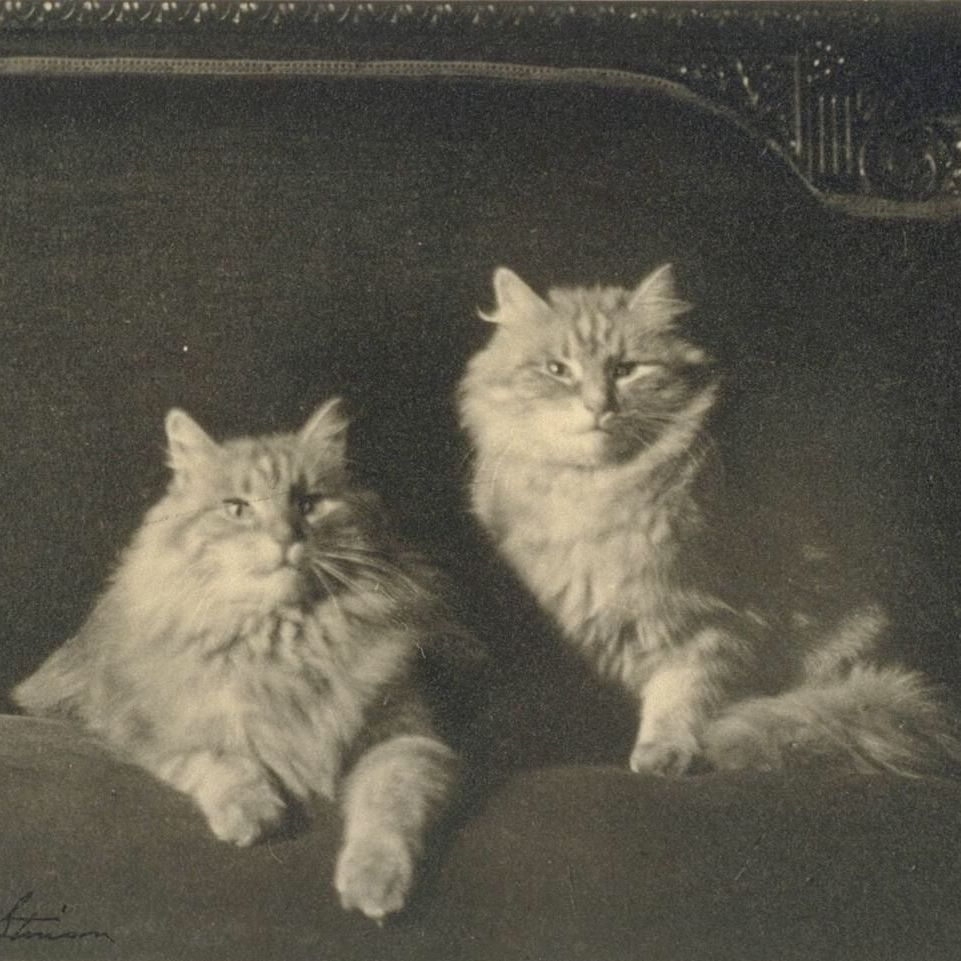
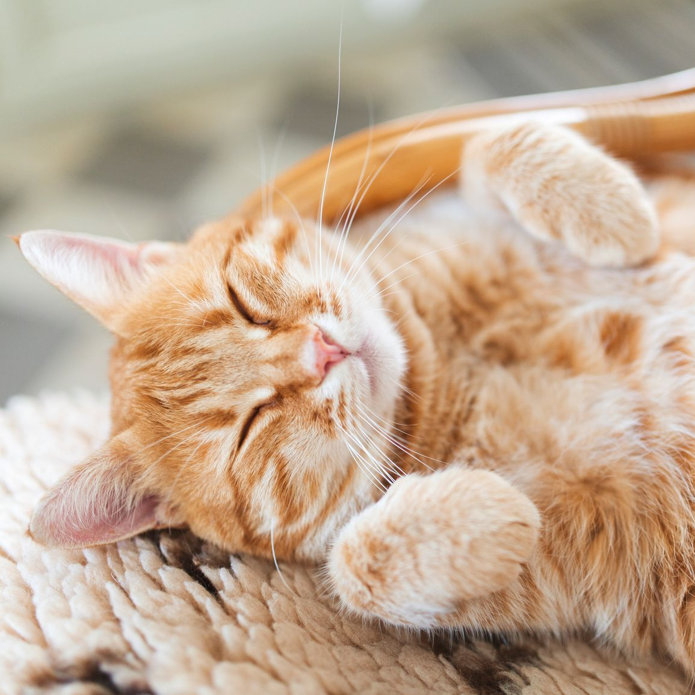
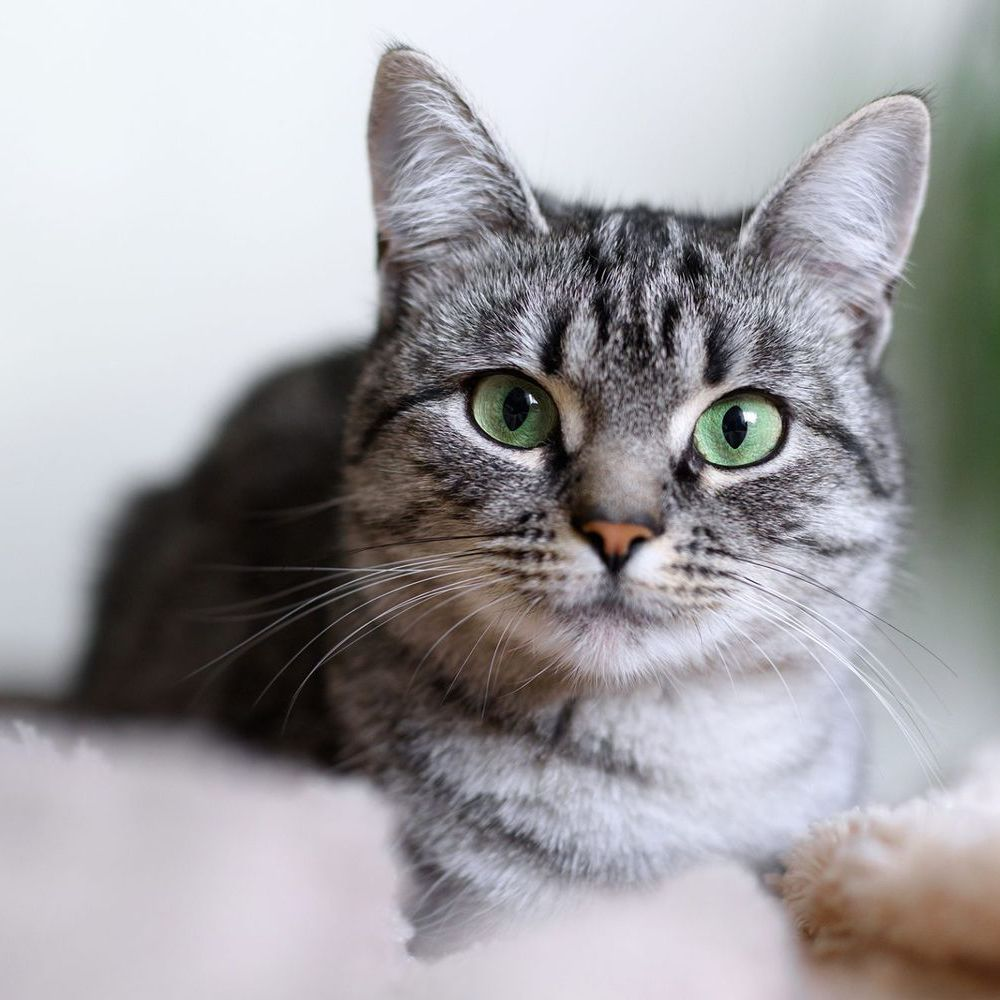
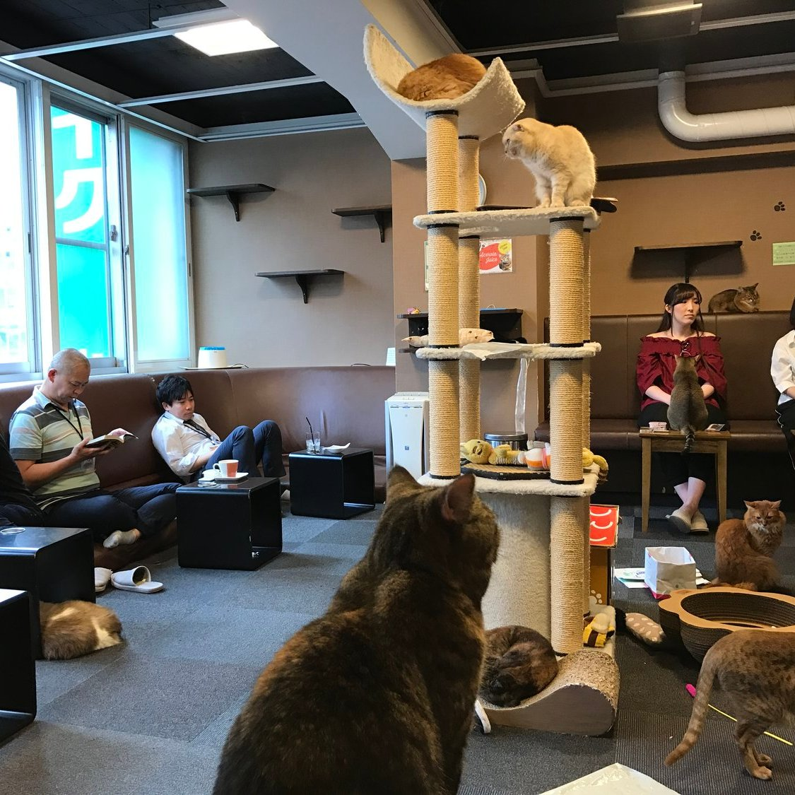

O nama
Naša priča
 Naša priča započinje s iskrom ljubavi prema mačkama i strašću prema stvaranju zajednice koja dijeli tu neopisivu vezu s ovim predivnim stvorenjima. Inspirirani potrebom da stvorimo jedinstveno mjesto koje spaja ljubitelje mačaka i ljubitelje kave, otvorili smo vrata Cat Cafe-a. S prvom šalicom kave, naša vizija postajala je stvarnost, a svaki korak naše priče donio je sreću mačkama koje su pronašle dom, kao i posjetiteljima koji su pronašli oazu mira i radosti.
Kroz godine smo rasli i razvijali se zajedno s našom mačjom obitelji. Svaka šapa koja je prošla kroz naša vrata ostavila je trag ljubavi, smijeha i neizbrisivih uspomena. Naša predanost brizi o mačkama, podrška lokalnim udrugama i organizacijama te rad na podizanju svijesti o važnosti odgovornog vlasništva nad životinjama postali su sastavni dio naše priče. Cat Cafe nije samo prostor, već živo tkivo koje pulsira s ljubavlju prema mačkama i željom da podijelimo tu radost s cijelom zajednicom.
Naše mačke
Naša mačja obitelj čini srce Cat Cafe-a, svakom posjetitelju pružajući jedinstvenu dobrodošlicu i toplinu. Svaka od naših mačaka ima svoju posebnu priču, a mi ih s ponosom predstavljamo kao zvijezde našeg kafića. Sretne duše koje su pronašle svoj dom u našem prostoru donose raznolikost i ljubaznost koja obogaćuje iskustvo svakog posjetitelja.
Upoznajte Tigra, nježnog velikana s prepoznatljivim crnim prugama, koji voli udobno se smjestiti u krilo posjetitelja i uživati u maženju. Mala Bella, s dugom svilenkastom dlakom, donosi dozu elegancije u prostor svojom nevjerojatnom gracioznošću. A tu je i Mac, nestašni avanturist koji obožava istraživati svaki kutak našeg Cat Cafe-a. Svaka mačka ima svoju priču, a zajedno stvaraju atmosferu koja je jednostavno neodoljiva.
Naša briga o mačkama ne završava samo na ljubavi i pažnji koje im pružamo svakodnevno. Aktivno surađujemo s lokalnim udrugama i skloništima, pružajući priliku mačkama da pronađu trajne domove. Sve mačke u Cat Cafe-u dolaze iz različitih pozadina, a mi smo ponosni što smo im pružili drugu priliku za sreću i toplinu doma.
Naš prostor
 Cat Cafe nije samo prostor za ispijanje kave - to je topao i udoban dom gdje se ljubitelji mačaka susreću. Naš prostor je pažljivo oblikovan kako bi stvorio ugodno okruženje za sve posjetitelje i naše mačje stanovnike. S velikim prozorima koji propuštaju obilje svjetlosti, udobnim stolicama i mekim prostirkama, [Ime Cat Cafe-a] pruža opuštajući ambijent gdje se posjetitelji mogu osjećati kao kod kuće. Svaki kutak je pomno osmišljen kako bi se stvorila harmonija između ljudi i mačaka, potičući interakciju i stvarajući nezaboravna iskustva.
Posebno smo ponosni na naš Cat Lounge, prostor gdje se mačke osjećaju slobodno i uživaju u igri i maženju s posjetiteljima. Ovdje se stvaraju posebne veze između ljudi i mačaka, a atmosfera je ispunjena radosti i smijeha. Naš prostor nije samo kafić, već mjesto gdje se dijele priče, stvaraju prijateljstva, i gdje se svaka šalica kave ispija uz druženje s mačkama koje slobodno šeću oko vas.